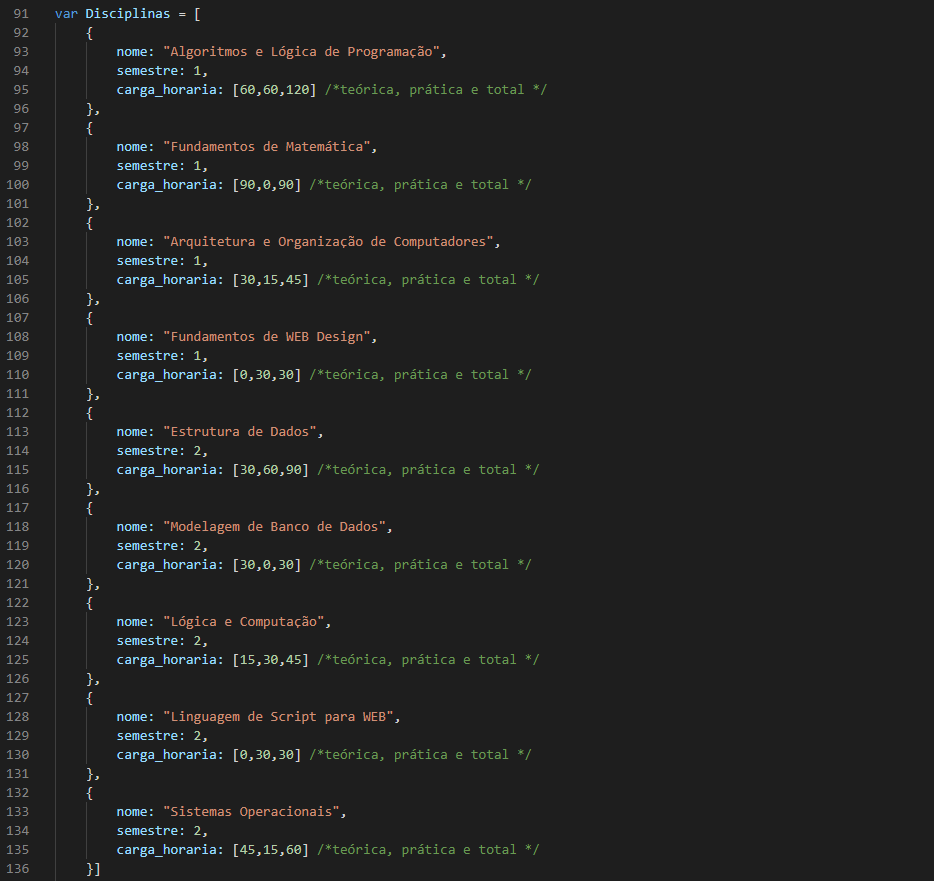

1) Faça uma página html com três inputs: nome, idade e sexo. Em seguida, faça um botão “Exibir” que ao
clicar no botão você vai exibir essas informações tanto em formato de alerta quanto no console do
navegador.
2) Faça uma página html com um input: velocidade em km/h (quilômetros por hora). Em seguida, faça um
botão “M/S” que ao clicar no botão vai exibir tanto em formato de alerta quanto no console do navegador o
resultado da velocidade em m/s. A fórmula de conversão é: M = K/3.6, sendo K a velocidade em km/h e M
em m/s.
3) Crie uma função que receba dois vetores. Tal função deve retornar um vetor único com a junção dos vetores
recebidos como parâmetro (caso desejar, você pode utilizar o método concat). Crie uma segunda função
que faça a chamada desta primeira e imprima o vetor recebido como retorno em uma div utilizando
innerHTML.
4) Crie uma função que receba um vetor com valores numéricos como parâmetro e apresente ao usuário (por
meio de alerta ou no console) o valor do maior e do menor elemento bem como a sua posição.
O curso superior de Tecnologia em Análise e Desenvolvimento de Sistemas visa formar profissionais
especializados e empreendedores, capazes de analisar, projetar, desenvolver, testar, implantar, administrar
e manter sistemas computacionais de informação e inovações na área de desenvolvimento de sistemas.
Logo abaixo está um vetor contendo as disciplinas do primeiro e segundo semestres do curso:

5) Faça uma função que ordene o vetor Disciplinas por semestre e nome da disciplina, ou seja,
Algoritmos, Arquitetura, etc. Em seguida, exiba na divResolucao uma tabela com as seguintes
informações: Semestre; Nome da Disciplina; Carga horária total. Para executar a função, o usuário
deve clicar no botão “Exercício 8.2” e o botão deverá ficar “AZUL” e os demais botões com a cor padrão
do navegador.
Faça uma função que leia o vetor Disciplinas e exiba na divResolucao a disciplina com maior carga
horária por semestre. Para executar a função, o usuário deve clicar no botão “Exercício 8.3” e o botão
deverá ficar “AZUL” e os demais botões com a cor padrão do navegador.
Faça uma função que leia o vetor Disciplinas e exiba na divResolucao as disciplinas que possuem
apenas carga horária prática. Para executar a função, o usuário deve clicar no botão “Exercício 8.4” e
o botão deverá ficar “AZUL” e os demais botões com a cor padrão do navegador.
Faça uma função que leia o vetor Disciplina, calcule e exiba na divResolucao as seguintes informações
para cada semestre, em formato de tabela: Semestre; Quantidade de Disciplinas; Carga horária
Teórica; Carga horária Prática; Carga horária Total. Ou seja, esta tabela além do cabeçalho terá duas
linhas, uma para cada semestre. Para executar a função, o usuário deve clicar no botão “Exercício 8.5”
e o botão deverá ficar “AZUL” e os demais botões com a cor padrão do navegador.